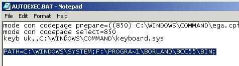
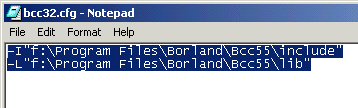
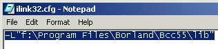
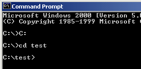
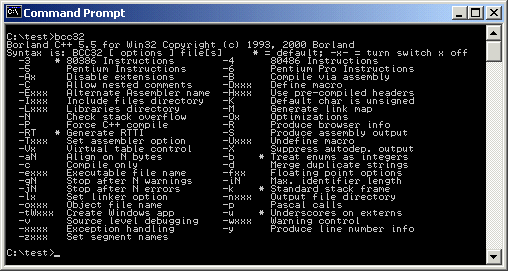
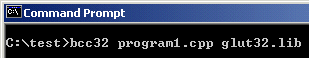
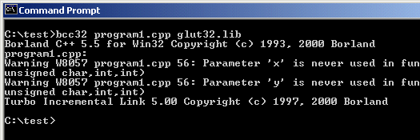
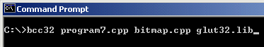

introduction
The following page shows you how to setup Borland's free command line
compiler tools. After setting up, we'll compile an example program to make
sure everything works correctly. After you've installed the command line tools you'll need to
setup your computer to use them properly.
You have to make sure that the Borland Compiler is setup in your
path. In your "autoexec.bat" the path line should contain the location of the
BCC55/BIN directory. For example my PATH line looks like this.
(Highlighted for ease of viewing) 
Your PATH may be different, just add the location of the BCC55\BIN directory to the end. Remember to separate the different paths with a semicolon ";"
Create a "GL" directory in the BORLAND\BCC55\INCLUDE directory. Copy the header files into the new "GL" directory. You should have gl.h, glu.h and glut.h.
Copy "glut32.lib" into the BORLAND\BCC55\LIB directory.
Create 'standard' .cfg files for the compiler so it knows which directory to look for the include and library files. Make a text file called "BCC32.CFG" in the \BIN directory and copy the following two lines into it (high lighted for ease of viewing):

Again, your directory locations may be different, but you get the idea. This file tells the compiler where to look for the standard include files and libraries.
Next, make a text file called "ILINK32.CFG" in the \BIN directory and copy the
following line into it:

This tells the linker where to look for the libraries.
Restart the computer so that the new path is loaded. (If you didn't already know, putting the BCC55\BIN in the 'path' means that you can run any program from that directory without 'being' in that directory - you'll see what I mean a little later on.)
Open up an MS-DOS prompt (or a console window, if you're using WindowsNT/Windows2000). Make a new directory somewhere on your C:\ drive, lets call it "Test".
Switch to that directory by typing the following in the console window, the first line switches you to the C: drive, the second changes the current directory to "TEST":

Next we'll test whether the path have been setup correctly. Type "BCC32", hopefully the compiler should run - giving you a list of its commands. If it doesn't then check you set the path up correctly. (font size shrunk to save space...)

Copy a simple example to the test directory - use Windows to do this. Its easier than buggering about with the console commands. I'll copy the source file "program1.cpp" to my directory using explorer.
Compile and link the program by typing in:

The program will (hopefully) be compiled and the BCC32 will automatically invoke the linker and link the glut32.lib with your program. The standard libraries are always linked - so you don't need to worry about those. Your console window should look something like the one below.

Don't worry about compiler warnings - it's only the errors you've got to bother about... Try to run your program. You'll need glut32.dll in the same directory or in the Windows/System directory for it to work.
Compiling programs with multiple source
files is just as easy... program7.cpp uses the
bitmap loader functions. To compile this you simply type:

email me if you have any trouble. If you know of a good C++ editor/syntax checker available for free give me a shout!
Happy experimenting!
Website and content, Paul Groves